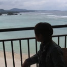
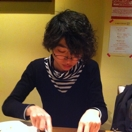
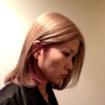
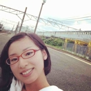
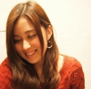
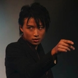
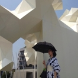
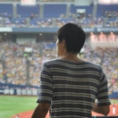

Gadago NPO Founded 2004 in Tokyo
学生からキャリアのある人まで、Gadago NPOの理念に触発されて多くの人達がインターンシップに参加しています。3名からなるチームを4ヶ月毎に結成、Tokyo Art Beatの中核といえる膨大なアート情報を相手に日々奮闘中。業務の傍ら、「課外活動」として各々のプロジェクトにも取り組んでいます。 トップへ戻る
今までのインターンたち
-

Nanami
2014年春より法科大学院進学予定
2013年10月〜2014年1月日常の中で使える「機能の美」に興味があります。また、新しい視点を与えてくれるような、今までになかった表現にも関心があります。
TABlogにフォトレポートの記事を掲載しました。取材するイベントは、深く知りたいという興味を覚えたものを選びました。それによって、なるべく予備知識のない人にも関心をもっていただき、より多くの人が実際に足を運びたくなるような記事を心がけました。極力イベントの開始から時間を置かずに掲載したことで、来場の促進にも貢献できたと思います。
-

Kosuke
大学院生 美学専攻
2013年10月〜2014年1月興味の中心にはいつも本がありました。「物」としての書物が持つ意義を説明できればと、感性の学である美学を勉強しています。"
Tokyo Art Mapの今後の編集方針を考えるための、読者へのアンケートを実施しました。リニューアルして約一年が経ったアートマップが、どのように使われているか、また、新たな課題などがないか調査し、編集やデザインなど紙面を作って行く際の助けとなるよう努めました。
-
Haruka
大学生 アートマネジメント専攻
2013年10月〜2014年1月人の心、そして社会をも動かすような現代のアートに関心があります。TABでの活動の傍ら、就職活動にも邁進中。
GADAGOホームページのインターン紹介ページの作成に携わりました。これまでどのような人がインターンとして関わり、TABで具体的にどのような活動を行なってきたのかを、メールや電話でのヒアリングを元にまとめました。個性豊かなTABインターンのメンバーについて、より多くの方に知っていただければと思います。
-

Hitomi
フリーファッショニスタ
2013年6月〜2013年9月洋服の世界に飛び込み、教員をしていた事も。モードを中心に、「ファッションの世界から見たアート」に常に注目しています。
TABの関西版（Kansai Art Beat）の立ち上げに伴い、プロモーション用の手ぬぐい・フライヤー・ステッカーの3種類の制作に携わりました。デザイナーや制作会社と、納期・クオリティなどについての相談交渉を重ね、宣伝効果だけでなく手にした方に喜んでもらえるツールを目指しました。
-
Misaki
大学生 日本文学専攻
2013年6月～2013年9月写真、インスタレーションを中心に現代アートが好きです。演劇をやっていた経験もあり、舞台芸術に関わる仕事をしたいと思っています。
「夜までアートを楽しめるカフェやバー特集」というTABlog記事を執筆しました。美術館に足を運ぶのは敷居が高いと思う方にとっても、アートを身近に感じられる場所を紹介しました。また、日々のイベント情報入力業務では、これまで知らなかったアーティストやギャラリーを知ることができ、自分の関心の幅を広げることができました。
-

Asumi
大学生 理工学部 情報学科
2013年6月〜2013年9月メディア・アートに興味があり、アートと科学技術を融合させることで心地よい世界をつくりたいと思っています。
「大人の夏休み企画」として、一般の方でも作れるメディア・アート工作や、知る人ぞ知るメディア・アート動画の紹介記事を数本書きました。普段あまり取り上げてこなかったジャンルを分かりやすく紹介し、読者に関心をもってもらえるよう努めました。
-
Shion
大学院生 美術系専攻
2013年7月〜2013年9月西洋絵画を研究し、美術史などの知識を身につけながら、型にはまらず柔軟に発想する姿勢を大切にしています。
「トスカーナと近代絵画」展の内覧会に行き、フォトレポートを執筆しました。展覧会に足を運ぶきっかけを作るだけでなく、その背景にまで興味を持ってもらうにはどうすべきかを考え、専門的な知識を噛みくだいて紹介しました。
-

Maho
大学生 美術史専攻
2013年2月～2013年6月イギリス留学の際、アートと人々との身近な関係に感動し、将来は両者の出会いを助ける仕事がしたいと考えています。
毎週アート系のテレビ番組を見どころとともにFacebookページから発信しました。新しいタイプのコンテンツとして面白いとの評価もいただき、毎回改善を加えながら投稿を続けました。加えて、メールマガジンの執筆や、内部向けの編集勉強会の実施と成果報告マニュアルの作成を通して、シンプルで伝わりやすい文章について考えるきっかけとなりました。
-

Nen
大学生 国際関係論専攻
2013年2月〜2013年5月エンタテインメントと芸術の関係に興味をもち、今後は映画会社での仕事を通して娯楽性と芸術性を兼ね備えた映画の可能性を探求したいです。
少人数で多くの業務を担っているTABの営業や運営管理の効率化の手段として、助成金申請の提案を行いました。具体的にどのような助成金制度が存在するか調査し、その中でTABが申請可能なものや申請の手順をまとめました。助成金申請を検討するきっかけとなっただけでなく、助成金制度に対するスタッフの理解を深めることにも繋がったと思います。
-

Natsuki
大学生 心理学専攻
2013年2月〜2013年9月人はなぜ「美」を感じるのかという観点から、幅広いジャンルのアートに興味があり、現在はアート関連の書籍の出版に携わっています。
Facebookの投稿管理を行いました。日頃の投稿に対する「いいね」の数のばらつきに着目し、TABユーザーが求める情報の傾向を見つける必要性を感じたため、同期インターンと話し合いながら記事を編集することで面白いコンテンツを追求しました。「いいね」の恒常的増加と共に、投稿を見て応募してくれたという次期インターンの存在を知った時は、大きな成果を感じました。
-

Yusuke
大学生 政治学専攻
2012年10月〜2013年1年現代・クラシックを問わず、人の心を打つものや表現に関心がある。「人間は醜い、されど人生は美しい」がモットー。
Tokyo Art Mapのリニューアルに際して、PRイベントの企画書作りや設置状況を把握するための電話調査などを行いました。調査では、設置場所およびそれぞれの設置部数を再整理し、最適な部数が設置されているかを判別できるようにしました。また、発送コストを分析し、コスト削減にも貢献しました。
-

Erika
大学生 社会学専攻
2012年10月〜2013年1月クリエーターマーケットやワークショップ運営の経験から、アートと人をつなぐ方法を模索中。旅行が好きで、国際展やアートツーリズムにも関心があります。
"Tokyo Art Mapリニューアル時に実施したPRキャンペーンに携わりました。Facebook等で数段階に分けて情報を発信し、TABファンの方々に新しいアートマップの特徴をお伝えすることができました。また、twitterやメルマガなど、TABの持つ複数のメディアの長所を見直すことにもつながったと思います。
-

-

Tatsuro
アートNPO勤務
2011年10月〜2012年1月アートプロジェクトとアーカイブに係わる別のNPO団体に所属しながら、アートと社会の関わりを模索中。
東京デザイナーズウィークとデザインタイドトーキョーという二つのデザインイベント会場にて、来場者を撮影したポートレイトコレクション兼ショートインタビュー記事を執筆し、TABlogに掲載しました。運営者や出展者から、普段はスポットが当たらない来場者の貴重な声をうかがうことができたと評価をいただきました。
-

Kohei
大学生
現代アート、グラフィックデザイン、エディトリアルデザイン、ファッションに興味を持っています。
「Tokyo Art Map」の編集アシスタントとして、ギャラリーや美術館の担当者との連絡のやり取り、情報編集、DTP、スケジュール管理などを行っています。電話やメールでのコミュニケーション能力、連絡や情報共有の徹底など仕事を行う上での基本的な部分、そしてどんな人が読んでも分かる文章作りを意識した編集など、専門的な側面も学んでいます。
-

Emika
美大生 木工専攻
2012年2月〜2012年5月木という素材を通して環境問題に興味を持っています。デザインを手段とした問題解決のきっかけづくりを模索中です。
「学生によるアート・デザインと社会の関わり方」をテーマに、学生たち自身のプロジェクトや作品をプレゼンするイベント「TAB Talks学生編」を企画運営しました。オーディエンスとプレゼンターの交流時間には、参加者のみなさんが交流し、新しいコラボレーションの種が生まれるような有意義な場を作り出すことが出来ました。
-

Satoshi
DJ／イベント・オーガナイザー
2012年4月〜2012年9月音楽イベントの企画・制作に数年携わっており、イベントにおける音楽と視覚芸術のコラボレーションの可能性についても興味を持っています。
TABの公式Facebookページのブラッシュアップに携わりました。扱う情報の範囲を従来の展覧会情報だけにとどまらず、TABのオフィス紹介、スタッフ達が出向いた展覧会レポートなど、TABについて知ってもらえる内容へと広げ、私たち組織に好感を持っていただけるような仕掛けを作りました。
-

Nozomi
大学生 フランス文学専攻
2012年6月〜2012年9月クラシックバレエに取り組む傍ら、展覧会や舞台といった芸術をより大衆的に広める方法を考えています。
普段展覧会にほとんど行かない人々やTABの非利用者層に向けて、彼らのライフスタイルやアートに対するイメージを、インタビューを通して調査しました。十人十色の意見を丁寧に分析することで、今後TABがユーザーに向けてどのように情報発信をしていけばいいか考察できました。
-

-

Takashi
ギャラリー勤務
2011年10月〜2012年1月現代アートとしての写真に関心があり、また「読む力」をつけるために研鑽しています。併せてディレクションやキュレーション等を勉強中です。
インターン中にTABlogでの展覧会のレポート執筆や撮影を行い、現在もTokyo Art Mapの業務など幅広く関わっています。全く別の業種から飛び込んで来たため、アート界の新鮮な空気を味わうことができ、また知識も増えました。アートの世界に何か一石投じようとする場に身を置けたことは良い経験となっています。
-

Sayo
事務職
2011年2月〜2011年9月現代美術から受けとる驚きや発見から、多くの人の感情が突き動かされる社会にしたいと考え活動しています。
TABlogの記事としてディレクターとアーティストにインタビューを行ったほか、インターン業務の引き継ぎや共同作業を円滑にするマニュアル作りなどに携わりました。普段の入力業務は細かい作業の連続でしたが、その内容がそのままユーザーの目に触れると思うとやりがいを感じました。TABの理想やアイデアを妥協せずに実現する仕事の進め方も勉強になりました。
-

-

Yui
大学院生 比較文化専攻音楽学
2011年5月〜2011年9月大学在学中にアメリカ・ウェルズリー大学に留学し演劇を専攻。帰国後大学院にて、研究の傍ら某大劇場にてミュージカル制作助手や翻訳を経験。
アートに関するコンテンツが中心のTABへ、シアター（演劇等）を「アート」として取り入れる活動をしました。「やなぎみわ演劇プロジェクト」の取材記事を執筆したり、アプリ「ミューぽん」に演劇公演を掲載するために奮闘したほか、内部スタッフに向けたシアター勉強会も開催。ユーザーに、シアターのアート的な魅力を提供する事ができました。"
-

Eri
文化施設 広報
ファッションやプロダクトの展覧会に関心があります。
TAB内部スタッフのための楽しいイベントを企画したり、展覧会のフォトレポートやオープニングの取材を行いTABlogにレポート記事を掲載しました。展覧会をレポートする側になったことで、人に正確な情報を伝える難しさを身をもって体験することができただけでなく、展覧会自体への理解もより深まりました。
-

Hanae
設計施工会社勤務
2010年5月〜2010年9月異業種交流を通じてアーティストが国内外に発信していけるようなプラットフォームの提供について模索中。
普段のウェブサイト更新業務に加え、「Tokyo Art Map」の編集やTAB7周年記念パーティーの企画に携わりました。パーティーで音響を中心に担当し、他のスタッフと報告や相談を重ねながら、音響技術者との打合せや調整を行いました。フラットな組織環境のもとで色々な事を一任してもらい大きなやりがいを感じました。
-

Saka
アーティスト
2010年1月〜2010年5月普段は講師をする傍ら、作家活動をしています。現在は「Daily Saka」というiPhoneを用いたドローイングプロジェクトを行うと同時に、写真の個展等も開催。
入力業務の傍ら、同期インターンと共にTABアプリの宣伝ビデオを作成しました。インターン当時は帰国したばかりだったため、日本のアートシーンを何も知らない状態でしたが、ギャラリー、アーティスト名、アート用語の基本を知ったり、オープニングに行った際には、アート業界の方々とのコミュニケーションについても学ぶことができました。インターン終了後もイベントオーガナイザーとして関わっています。
お問い合わせ
Gadago NPO
〒106-0031
東京都港区西麻布2-21-22 West Azabu 2F
Tel: +81 3-6427-6035